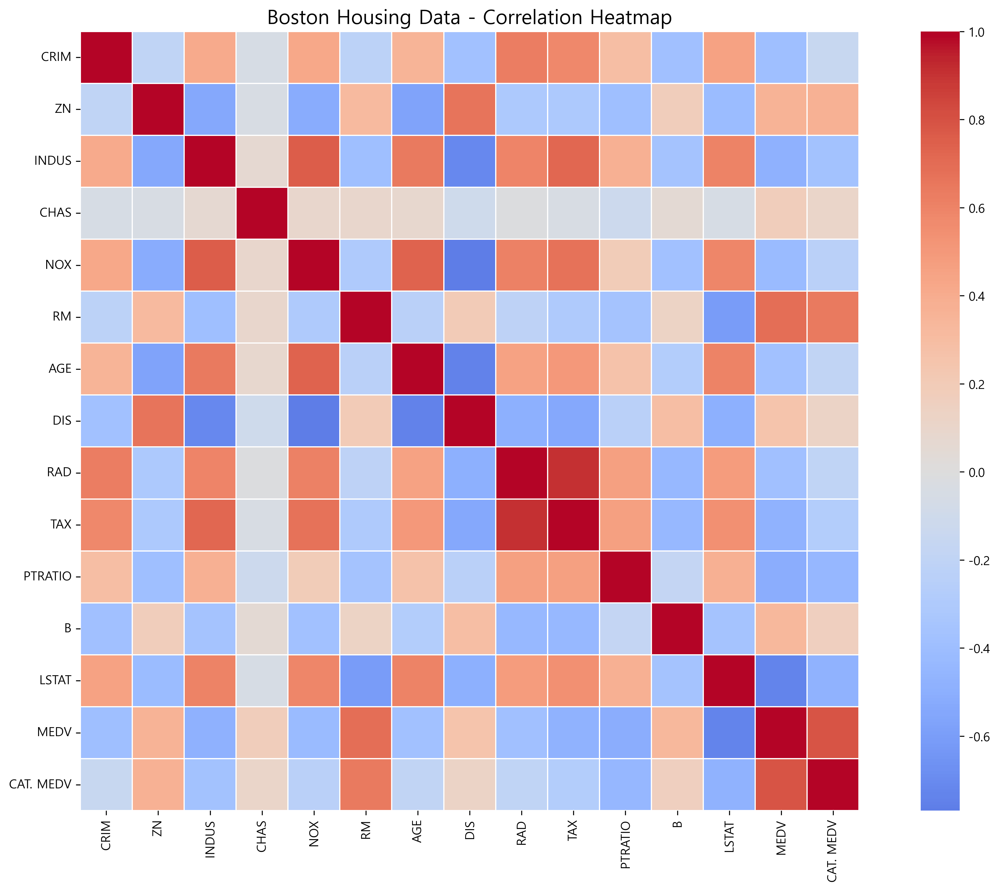
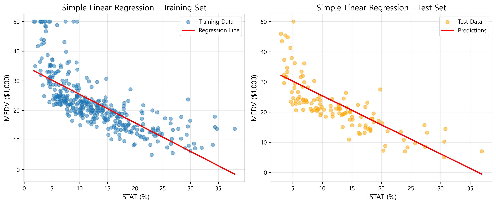
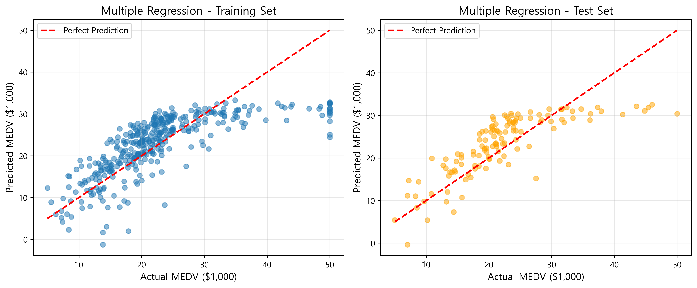
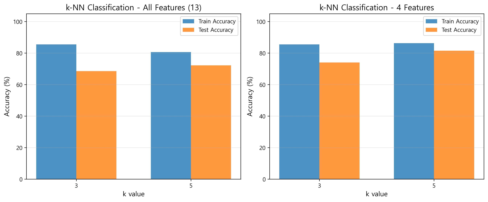

Python 데이터 분석 (Homework 1)
보스턴 주택가격 회귀 분석 · 와인 k-NN 분류
한양대학교 ERICA 스마트융합공학부 스마트ICT융합전공
AI+X: R-Py컴퓨팅 · Homework 1
AI+X: R-Py컴퓨팅 · Homework 1
Python
scikit-learn
Pandas
Matplotlib
개인 과제
About Project
Python 머신러닝 라이브러리를 활용한 데이터 분석 과제입니다. PART 1에서는 보스턴 주택가격 데이터로 상관관계 분석과 단순·다중 선형 회귀를 수행하고, PART 2에서는 와인 데이터로 k-NN 분류기를 구현해 k값·특징 수에 따른 정확도를 비교했습니다.
다룬 내용
- 상관관계 분석 · 변수 간 상관 히트맵으로 주요 특징 파악
- 단순 회귀 · LSTAT → MEDV 선형 회귀
- 다중 회귀 · LSTAT + TAX → MEDV, 설명력 향상 확인
- k-NN 분류 · 와인 데이터, k값(3·5)·특징 수(13개·4개)별 정확도 비교
Results
분석 결과 시각화입니다.

PART 1 · 상관관계 히트맵

PART 1 · 단순 회귀 (LSTAT → MEDV)

PART 1 · 다중 회귀 (LSTAT + TAX → MEDV)

PART 2 · k값별 k-NN 정확도 비교
Key Findings
보스턴 주택가격 회귀
| 모델 | Training R² | Test MSE |
|---|---|---|
| 단순 회귀 (LSTAT) | 0.5444 | 37.67 |
| 다중 회귀 (LSTAT + TAX) | 0.6123 | 31.90 |
와인 k-NN 분류
| 특징 | k | Train | Test |
|---|---|---|---|
| 전체 13개 | 3 | 98.40% | 96.30% |
| 전체 13개 | 5 | 96.80% | 96.30% |
| 4개 | 3 | 91.20% | 88.89% |
| 4개 | 5 | 88.80% | 87.04% |
Tech Stack
개발 환경
- 언어 · Python
- 분석 · NumPy · Pandas
- ML · scikit-learn
- 시각화 · Matplotlib · Seaborn
분석 기법
- 회귀 · 단순·다중 선형 회귀 (R²·MSE 평가)
- 분류 · k-NN (k·특징 수에 따른 성능 비교)
- EDA · 상관관계 히트맵
- 검증 · Train/Test 분리 평가